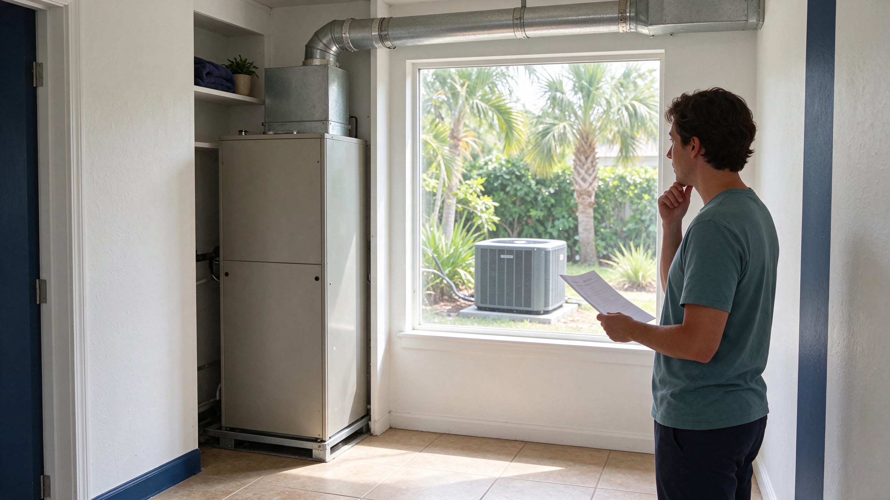

An equipment record or repair recommendation may list an “ECM blower” without explaining what that label covers. It describes the motor moving indoor air, not every part of the cooling system. Before interpreting it as a premium whole-system feature—or as the reason a motor has failed—separate the component name from its control design and the outdoor equipment.
This article explains that one label. For a broader equipment-selection comparison, use our single-stage, two-stage and variable-speed AC guide. The distinction matters when reading a service finding as well as when considering a new system.
ECM Names a Motor Technology, Not One Airflow Strategy
ECM stands for electronically commutated motor. In this context, it is the indoor blower motor's technology. The blower is the fan assembly that moves air through the indoor equipment and distribution system. “ECM” does not tell you, by itself, exactly how the equipment commands that airflow.
HVAC School's technical explanation identifies both common constant-torque motors and airflow-controlled variable-speed motors as ECMs. Its discussion concerns common residential and light-commercial motors, not every motor application. The important homeowner point is that two motors can share the ECM family name while responding to different control inputs. [1]
Therefore, do not replace the label with a more specific description unless the equipment documentation supports it. “ECM installed” and “airflow-controlled variable-speed blower installed and configured” are different levels of information. Neither sentence identifies what the compressor can do.
Constant Torque and Airflow-Controlled Operation Are Different
A constant-torque ECM is programmed to produce a selected motor torque—the motor's turning effort—in response to its inputs. The common X13 name refers to one branded constant-torque design, although other manufacturers offer this type. Constant torque does not mean the motor's rotational speed can never change, and it does not mean delivered airflow stays unchanged through every restriction. [1]
An airflow-controlled variable-speed blower uses equipment-specific programming and control inputs to work toward the requested airflow. Its response can depend on the air handler's controls, selected operating settings and the pressure the blower works against. The programming belongs to an equipment application; it is not simply a feature that any motor can add to any cabinet. [1]
That distinction is not a universal airflow guarantee. Even “constant airflow” is a description of a control approach, not a promise that every room receives the right air under any duct or filter condition. Ask which design is installed and how its documented operating range applies to the actual system.
The Compressor Controls a Different Part of Cooling
The indoor blower moves air. The compressor is part of the refrigerant circuit that supports heat transfer. In a conventional split system, the air handler and blower are indoors, while the compressor is in the outdoor unit. PNNL describes those separate components and discusses variable-speed compressor designs separately from blower improvements. [2]
A blower motor label does not identify the compressor's operating type. If the question is whether the AC has variable-capacity cooling, confirm the outdoor model's documented compressor operation and the supported control arrangement. Do not infer it from the letters ECM on an indoor record, from a gradually starting fan or from how gentle the breeze feels at one vent.
Likewise, an indoor blower replacement is not itself replacement of the outdoor compressor. Restoring a specified blower's operation and changing the whole system's cooling-output capability are different tasks. Use the broader stage guide when comparing complete equipment options rather than treating a motor description as a system classification.
What Should a Blower Repair Recommendation Explain?
If blower motor replacement is proposed, ask what was found and which approved replacement fits the equipment. The ECM name alone does not establish a failed motor, a failed electronic control or the need for a different system. It identifies a family of components, not a diagnostic result.
Useful questions include:
- Which indoor equipment model and blower design are involved?
- What observed or measured finding supports the recommendation?
- Which replacement and any required programming or controls are included?
- How will the requested airflow and operating response be checked afterward?
These are questions for the service provider, not instructions to test a motor yourself. Do not open the cabinet, unplug a module, change control settings inside the equipment or try electrical measurements. Our AC repair quote questions explain how to connect the finding with the written work and follow-up.
Check Airflow, Not Only the Motor Name
ENERGY STAR's quality-installation guidance says system airflow should meet manufacturer performance specifications. It also identifies duct evaluation as part of installation quality. That supports asking for an equipment-specific airflow check rather than accepting the ECM label as evidence of correct delivery. [3]
If the home has changed cooling or circulation, describe that change when requesting AC repair assessment. Report which rooms are affected, when the pattern occurs and whether it began after service or another equipment change. Existing records can help identify the system without opening it.
A motor classification cannot establish why the home is uncomfortable. If the fan runs but cooling is poor, our AC running but not cooling article addresses that separate symptom. Keep a component explanation separate from a diagnosis of the whole cooling complaint.
Keep Two Separate Equipment Facts in Your Records
Ask for a plain-language explanation of the indoor blower design and the outdoor compressor operating type. Add the exact equipment models and relevant control information to the service or installation record. This is more useful than trying to classify the AC from a sound, a motor acronym or a general sales label.
For a Tampa or North Tampa homeowner, the next step is not automatically an upgrade. It may simply be clarification of the equipment already installed. If there is a performance complaint or a repair recommendation, ask for the specific finding and intended correction before deciding what work to approve.
Frequently Asked Questions
Are constant-torque and airflow-controlled blower motors both ECMs?
Yes. Common residential constant-torque and airflow-controlled variable-speed designs can both belong to the ECM motor family. Their control strategies differ, so identify the actual equipment and motor design rather than assuming all ECM blowers behave alike.
Does a gradually starting indoor fan prove the AC compressor is variable speed?
No. The indoor blower's response does not classify the outdoor compressor. Confirm the outdoor model's documented operating type and supported controls separately; a quiet start or changing vent breeze is not that documentation.
Will replacing an ECM blower turn my AC into a variable-capacity system?
A blower replacement does not, by itself, replace or reclassify the compressor. Ask what the approved indoor repair restores and which controls or setup it requires. A complete cooling-capacity change is a separate equipment decision.
Is the thermostat's Auto fan setting the same as an ECM motor?
No. A thermostat fan setting concerns when indoor circulation is requested. ECM describes motor technology. Follow the installed controls' instructions and do not use the fan setting as evidence of the blower design or compressor type.
Editorial Source Review & Publisher
On The Way Heating & Air reviewed the cited technical explanation and federal guidance for this component-label question. This article does not identify an individual system from a photo, name or sound, prescribe motor tests or promise an upgrade result. Equipment-specific documents and professional findings determine the applicable design and work.
Sources
- HVAC School: The Difference Between Variable-Speed and X13 Motors — Bryan Orr's technical explanation of common residential/light-commercial ECM control designs, published October 12, 2024.
- PNNL Building America Solution Center: Traditional Split Heat Pumps — separate indoor blower and outdoor compressor roles, compressor technology and component matching; historical efficiency thresholds and numerical examples are not used here.
- ENERGY STAR: HVAC Quality Installation — manufacturer-specified airflow and duct evaluation.